内容要点
一段 23 分 13 秒的剪映专业版完整剪辑流程教程，八个步骤从零开始：思路、素材、初剪、精剪、加音乐、加文字、加音效、最终导出。①思路：剪辑前必须明确主题（今天=音乐情感类短片），新手最易忽略却最重要。②素材：点左侧加号导入或从文件夹拖拽到媒体池；预览素材分清空镜头/人物镜头/同场景素材，L键加速预览。③初剪：片头先放空镜头营造氛围（不直接放人物镜头，节奏太快观众滑走）；I键入点、O键出点拖到时间线；同场景不同景别衔接成一组，不同场景间加空镜过渡；去除杂音=右键分离音频删除原声。④精剪：素材拖到自由轨道逐段与音乐节奏点对齐；Command+B分割、Delete删除；Command+R变速（人物0.25倍、空镜0.5倍，需高帧率素材）。⑤加音乐：通用先剪画面再加音乐；踩点片先放音乐按节拍剪。⑥加文字：智能文本识别歌词，选排列样式。⑦加音效：根据画面联想声音（知了/风/布料/踩草地/转场音/鸟叫/海浪），音效是点缀音量调小。⑧导出：1080P（素材4K才选4K）、MP4、30帧。
知识结构
八步骤总览；导入素材（加号/拖拽到媒体池）。
剪辑前明确主题；预览素材分清空镜/人物/同场景。
片头空镜开场；I/O键入出点；同场景成组、异场景加空镜；分离音频去原声。
音乐时机通用先剪再加、踩点先放音乐；拖面板缝隙调界面。
自由轨道逐段对齐节奏点；Command+B分割；变速0.25倍（120帧安全）。
智能文本识别歌词，选排列样式。
转场只加异场景；音效按画面联想+调小音量点缀。
1080P/MP4/30帧导出；剪辑必须手动练习。
剪映完整剪辑流程=八步：①思路（先定主题，音乐情感片/产品展示）②素材（导入媒体池+预览分类）③初剪（片头空镜开场→I/O键出入点→同场景成组、异场景空镜过渡→分离音频去原声）④精剪（自由轨道逐段对齐音乐节奏点、Command+B分割/Delete删除、Command+R变速：人物0.25倍空镜0.5倍，需120帧素材防掉帧）⑤音乐（通用先剪再加，踩点先放）⑥文字（智能文本识别歌词）⑦音效（按画面联想：知了/风/布料/草地/鸟叫/海浪，音量调小作点缀）⑧导出（1080P/MP4/30帧）。核心心法：氛围靠慢放，节奏靠对齐音乐，音效靠画面联想，学习靠手动练习。
00:00-02:23思路+素材：明确主题再动手
开场总览：「今天我们学剪映专业版的完整剪辑流程，从思路、素材、初剪、精剪、加音乐、加文字、加音效最终导出，八个步骤从零开始，让不会剪辑的你看完就能上手。」
素材导入：「你可以点击左侧的加号按钮进行导入，也可以直接从文件夹里把素材拖拽到媒体池的区域。」
关键提醒：「素材导进来之后，我们剪辑前一定要有个定位……一定要在心里有一个明确的思路，这个步骤很多新手会忽略掉，但恰恰对于入门剪辑的同学是最重要的。」
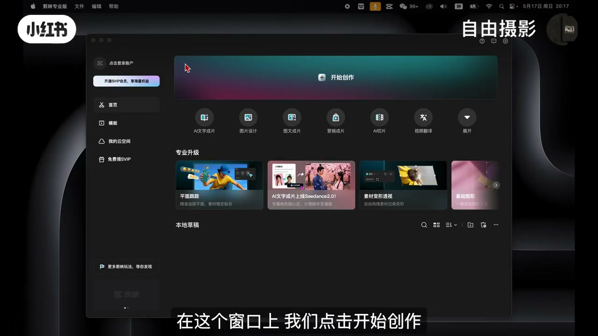
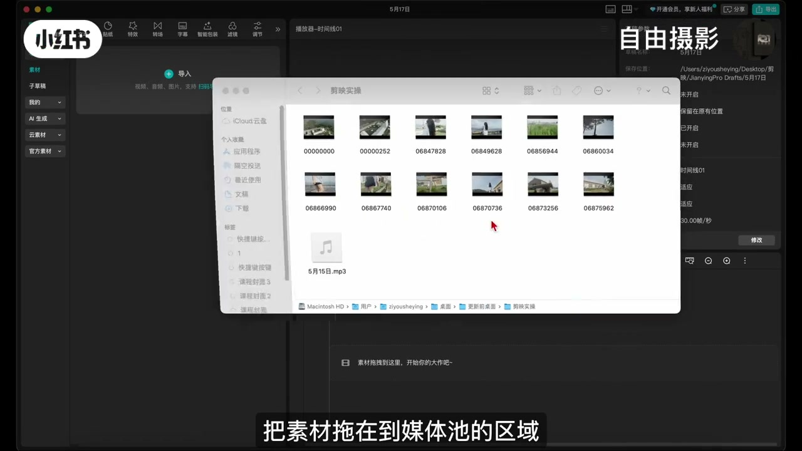
02:23-04:37预览素材：分清镜头类型
预览技巧：「直接用鼠标左键点击需要的片段就可以开始预览，还可以配合快捷键L键加快预览速度。」
预览目的：「你要清楚知道素材一共有几个片段、哪几个素材是在同一个场景、哪些素材是空镜头、哪些片段是有人物。」
作者自述：「我用的这些素材都是我自己在市区拍摄的，所以我清楚知道自己想要表达什么样的内容。」
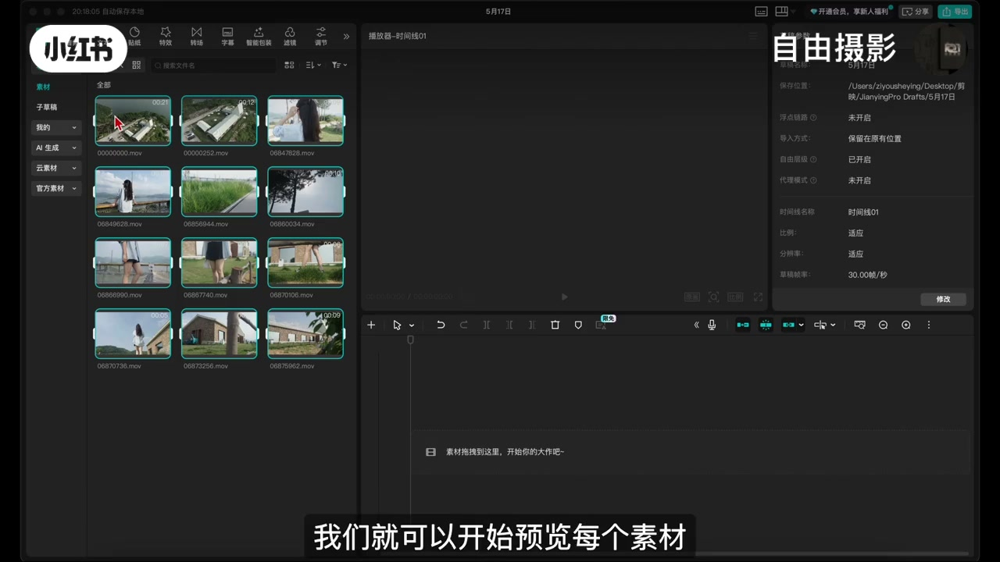
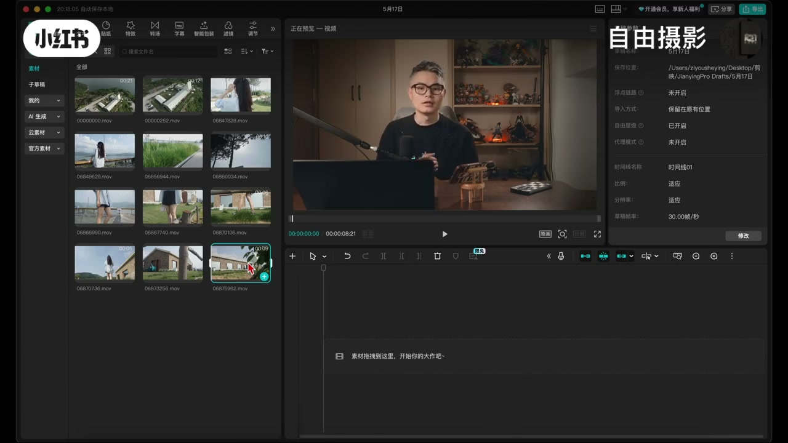
04:37-13:52初剪：空镜开场+排序过渡
片头策略：「剪辑的时候不要一上来就放人物镜头，直接进入主题，那节奏会太快，观众还没有进入状态可能就直接滑走了。所以我们通常会在开头先放几个空镜头，营造氛围、调动观众情绪、增加一点点神秘感。」
出入点操作：「按I键入点，按O键出点，然后直接拖到时间线。」时间线放不下时「按住Command加鼠标滚轮键，或者点击时间线上方功能区的放大缩小按钮」。
同场景成组：「这几个素材都是在同一个场景拍摄的，只是拍摄角度以及景别不同，我们可以把它衔接在一起，是非常连贯的。」不同场景之间「我们需要加一个空镜头进行过渡」。
去除杂音：「这些杂音其实就是素材的原声，这里我们先选中所有的片段，鼠标右键选择分离音频，把分离出来的原声删掉。」
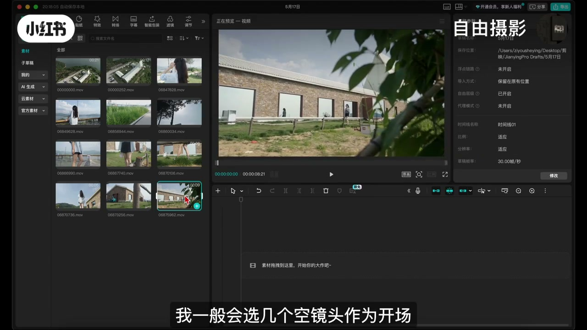
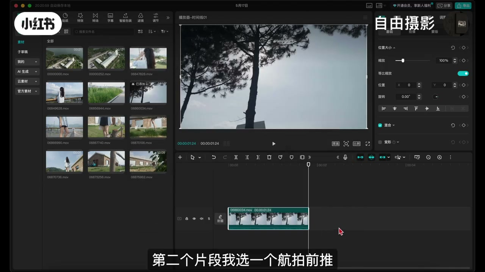
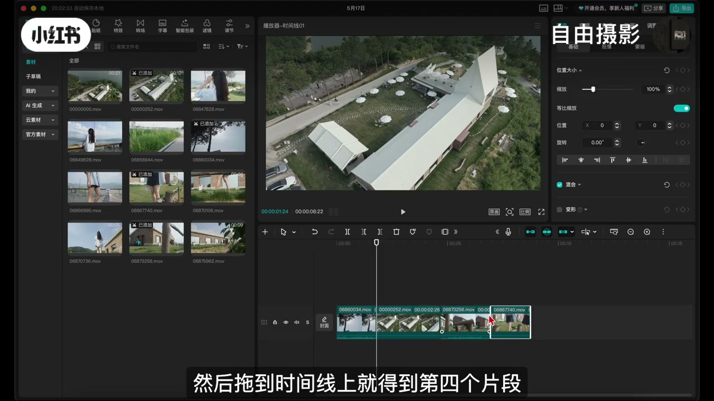
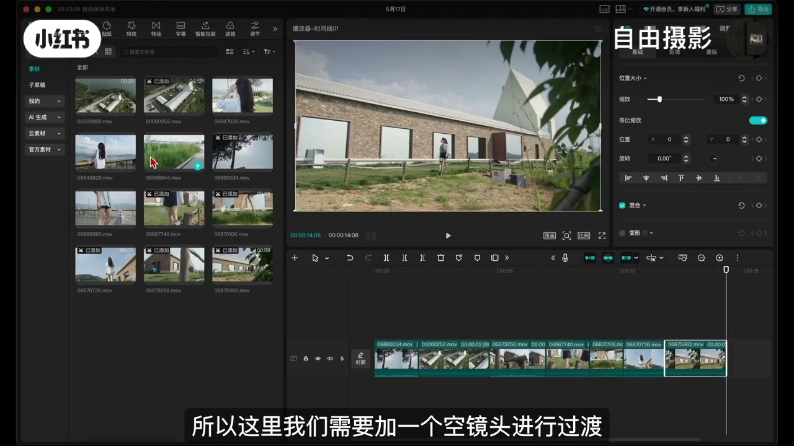
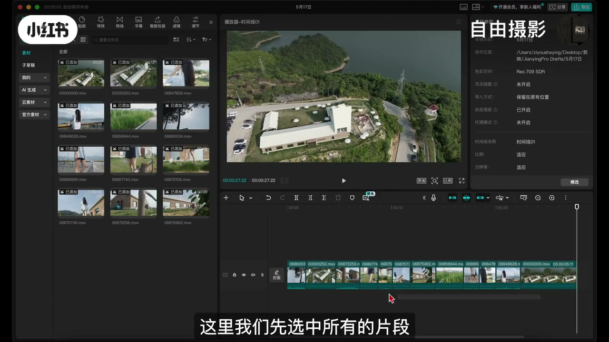
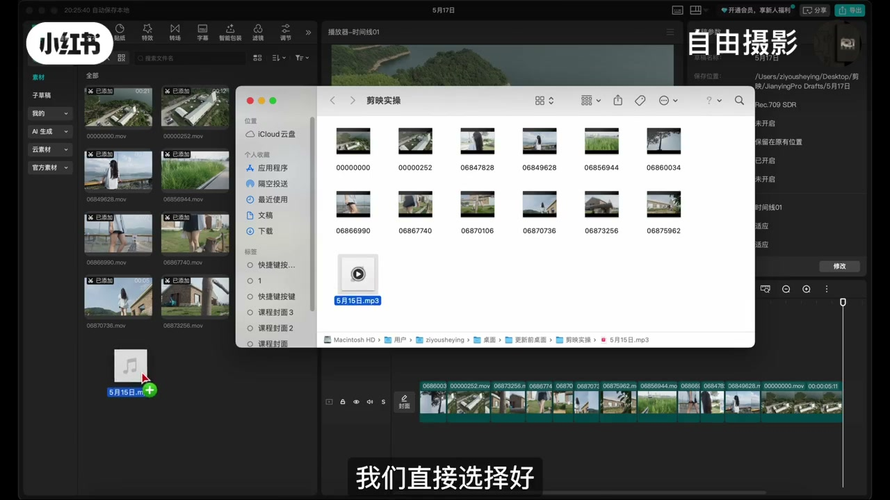
13:52-19:26加音乐+界面调整
音乐时机：「音乐是剪辑前加还是剪好再加，其实没有绝对的标准。比较通用的做法是先剪辑好画面、去掉原声、再加背景音乐。不过如果你的片子是需要踩点或者整体情绪是主要靠音乐来带的，那就可以先把音乐放进来，再根据音乐的节拍去剪画面。」
界面调整：「如果觉得剪辑界面太小，可以把鼠标放到面板之间的缝隙上，按住左键往左拖，这样剪辑区域就能变宽。如果想要更精细的调整布局，也可以点击监视器右上角的界面布局按钮。」
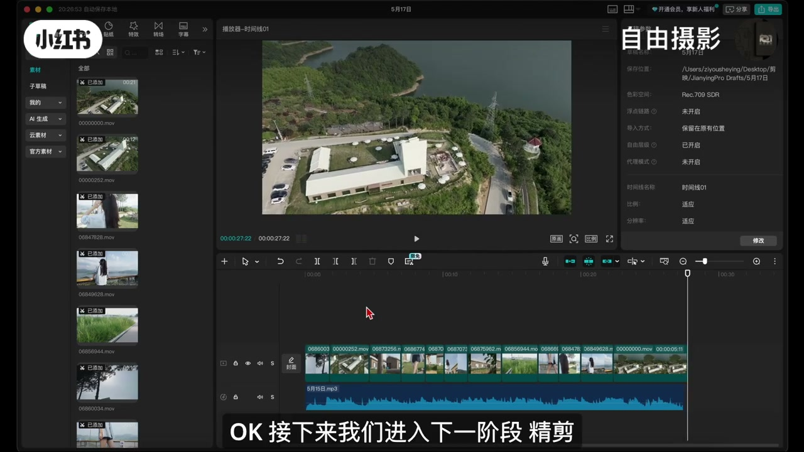
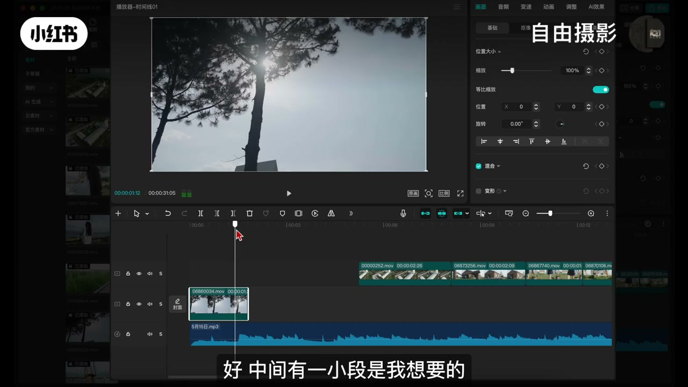
19:26-29:13精剪：节奏对齐+变速氛围
逐段调整法：「把素材往上拖到自由轨道，然后往后挪一点，就能看到它和第一段素材之间流出了空隙，这样我们就可以一个片段一个片段的调整，不用担心影响后面的片段了。」
切割工具：「中间有一小段是我想要的，用Command加B把它分割出来，选中后面不需要的片段按Delete键删除。」尾部略长时「把鼠标放到片段尾部，这时鼠标会变成双括号，按住左键往前推也能缩短片段」。
变速营造氛围：「这个片段是正常速度，感觉缺少点氛围，所以我们用Command加R打开变速控制，调整到0.25倍。」变速前提：「调整速度时一定要了解自己的片段是多少帧率拍摄的，如果素材是30帧或60帧拍摄的，调整0.25倍肯定会掉帧卡顿，不过我这个素材外拍用的是120帧，所以没有问题。」
氛围规律：「空镜头不需要太慢，0.5倍就足够了」，人物片段调到0.25倍。总结：「整个片段没有什么调整难点，主要是加了标准的升格，也就是降低了片段的速度，氛围感一下子就出来了。」
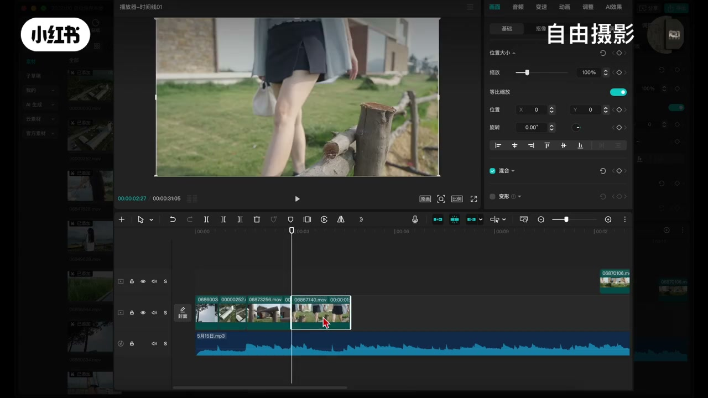
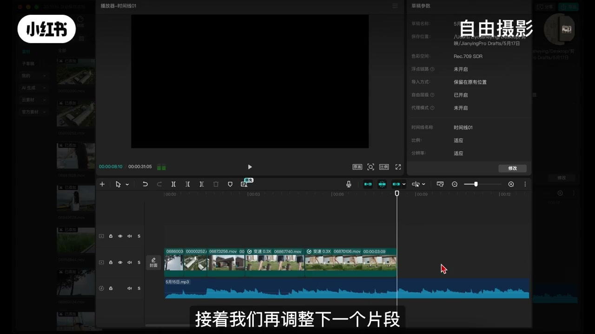
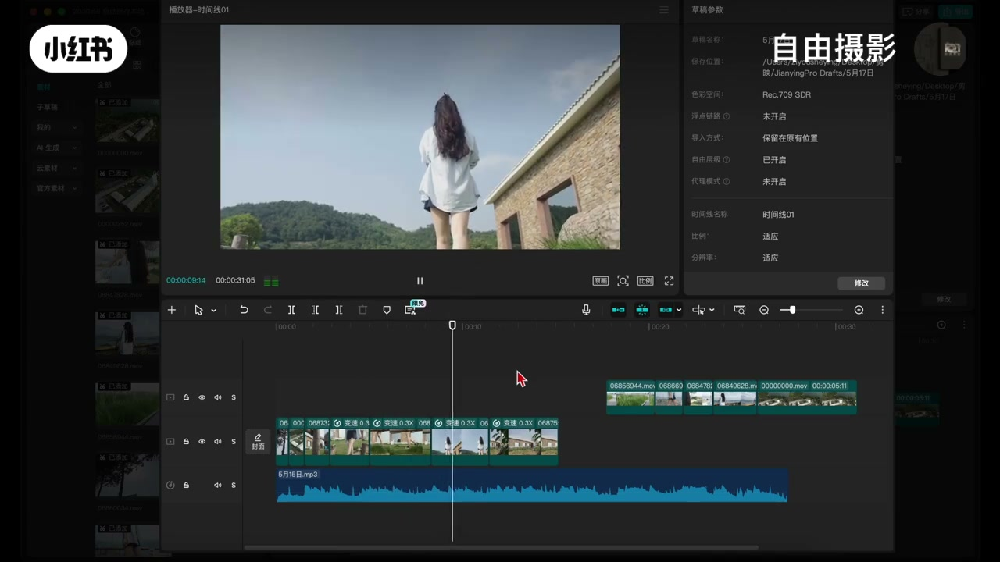
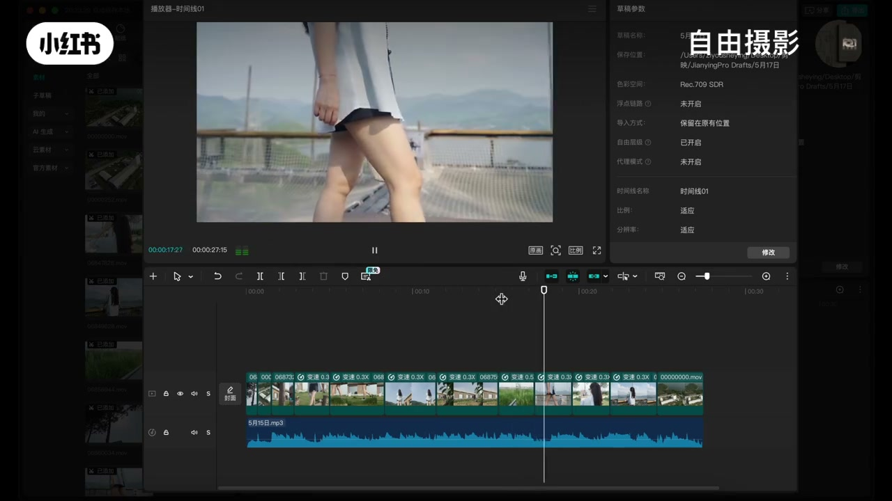
29:13-31:06加歌词：智能文本识别
「我们可以通过左上方找到文本，然后点击智能文本，选择识别歌词，识别出来之后这里有非常多的歌词排列样式供我们选择……点击选择，然后在下方点击开始识别歌词就可以了。」
识别完成后「时间线上和监视器中都有对应的歌词了」。歌词覆盖不全时「你可以手动拉动歌词的前后端，调整到你想要的位置」。
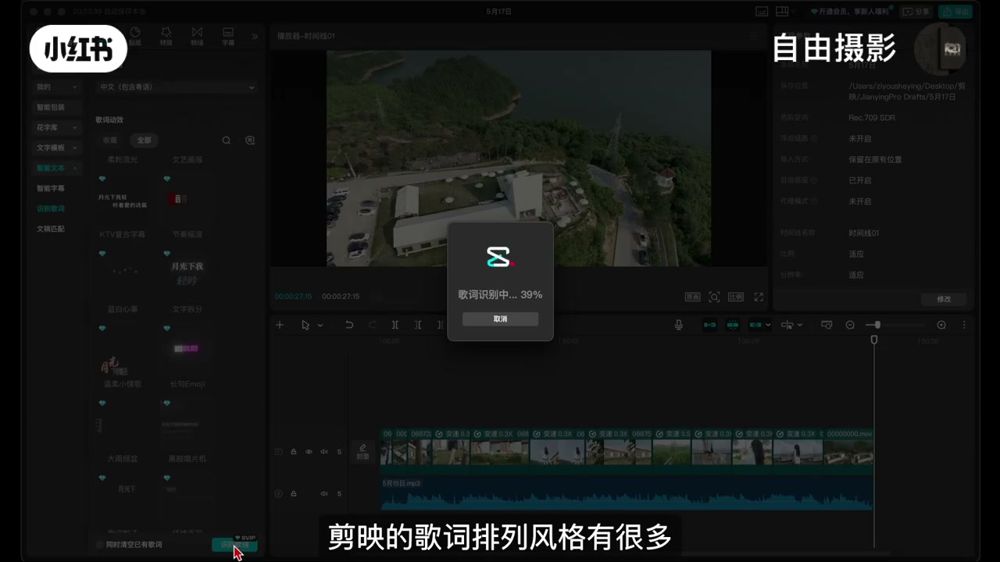
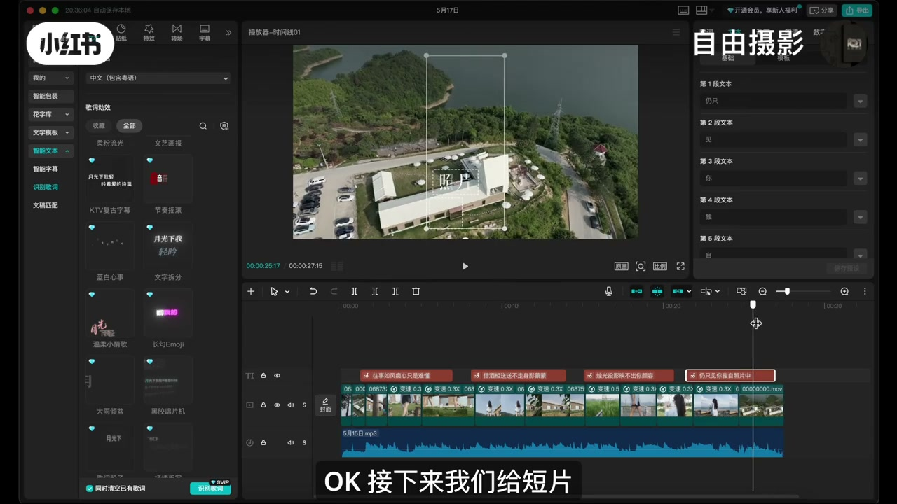
31:06-42:11转场+音效：按画面联想
转场原则：「转场只加在两个不同的场景之间……像这样属于同一组镜头，就不要刻意去加转场了，一定要加在不同场景之间。」操作：「点击左上角的转场菜单，然后拖到时间线上对应的位置，拉动效果的前后端还可以调整转场的时长。」
音效心法：「音效怎么加呢？根据画面来就行。比如我们看第一个画面有阳光有树，是在户外，在这个画面我们会联想到什么声音？炎热的夏天，知了的声音，风声鸟叫声，这些都符合画面的氛围。」
音效操作：「在左上方的工具栏这次我们选择音频，再找到音效库，直接搜索知了声，搜索出来之后可以一个个试听一下。」
音效精调：「音效有点长，我们直接把它往回压。想让音效结束得更自然一点，把鼠标放在音效片尾的原点上，鼠标会变成双头箭头，然后再往左拖一下。」音量：「我们这个音效只是点缀增加氛围感用的，不用太突出，所以这里我们把音量调小一点，隐隐约约有点感觉就行。」
作者强调：「我举这么多例子就是想让大家打开思维，根据画面做出自己的风格，千万不要死记硬背。」
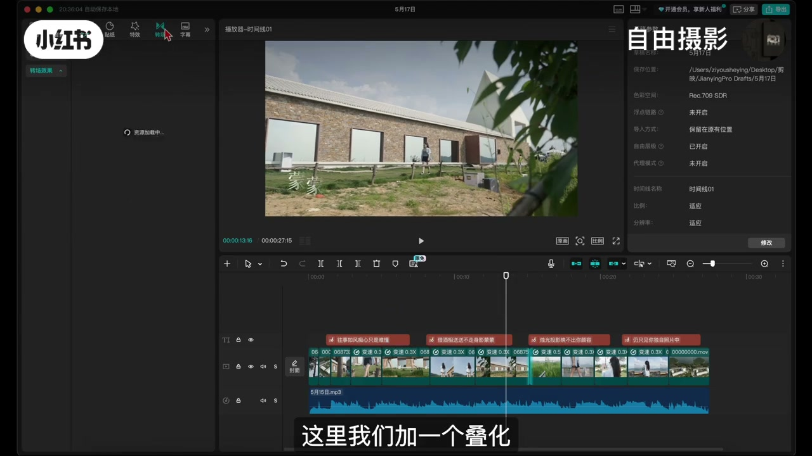
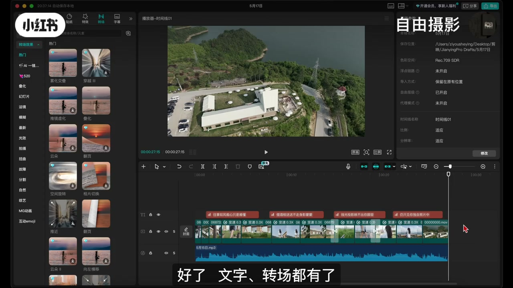
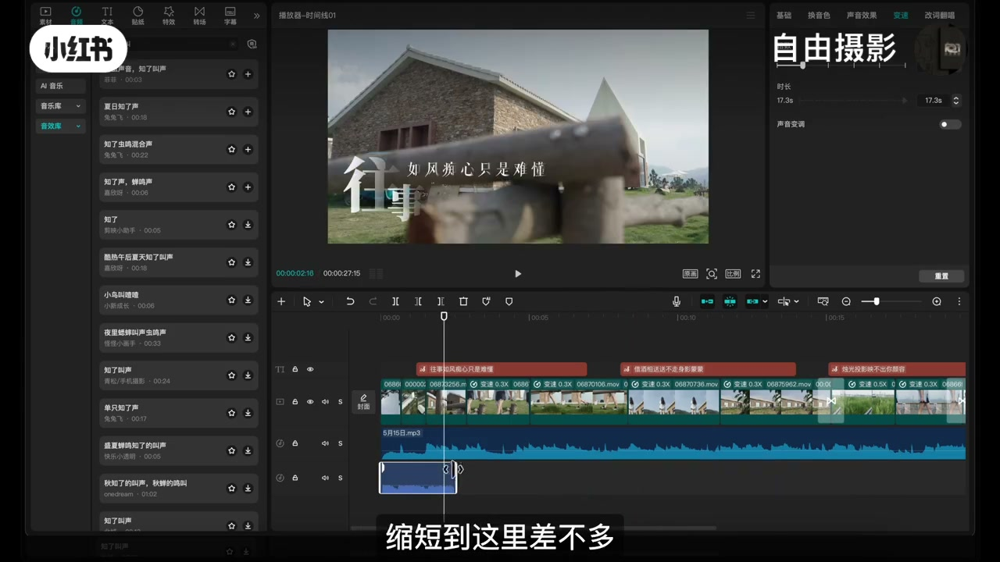
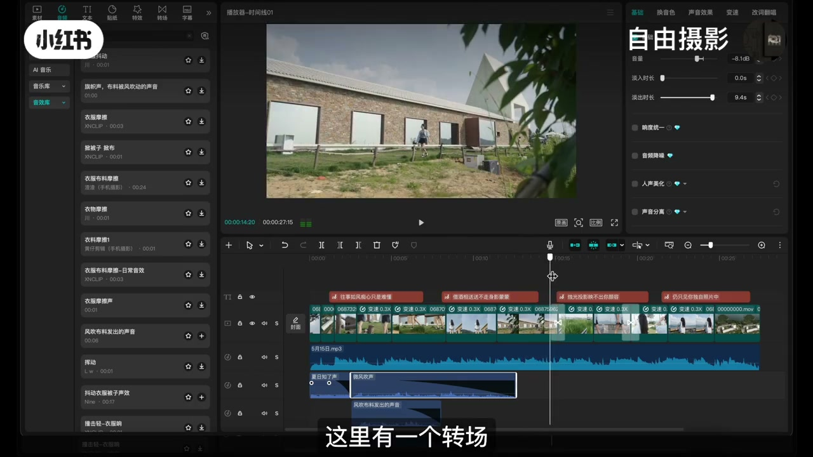
42:11-47:20导出+结语
导出设置：「点击右上角的导出……视频分辨率我们选择1080P或者4K，一般选择1080P就够用了，当然你想要更清晰一点也可以选择4K，前提是你的素材是4K拍摄的……格式选择MP4，帧率选择30帧，音频设置里的勾选可以去掉。」
结语：「剪辑这个东西观看可能还不够，一定要自己手动练习一遍，才能真正记住。练习素材呢我已经放到素材库了……下一期我们把剪辑功能再熟悉一下，可以更好的提升剪辑效率。」
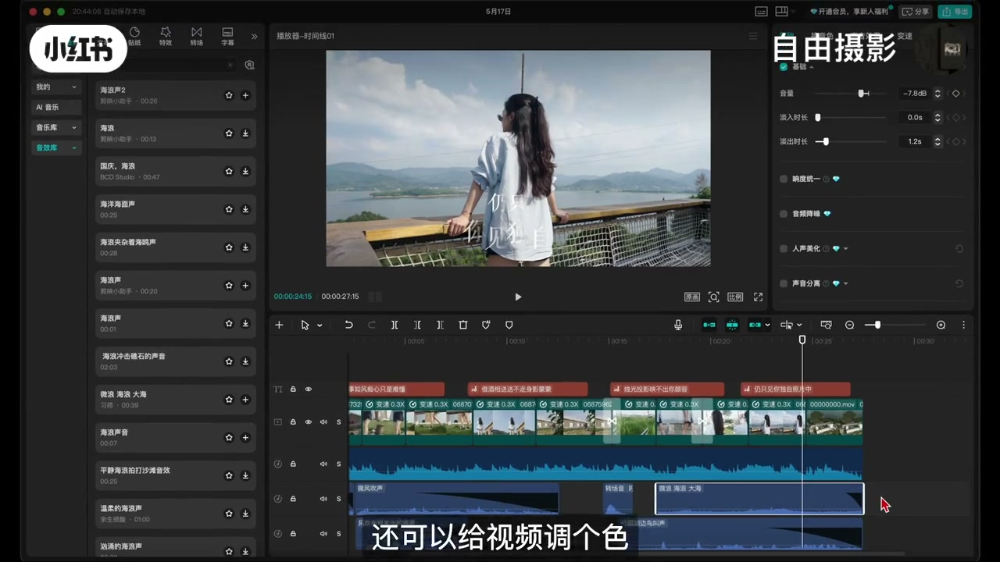
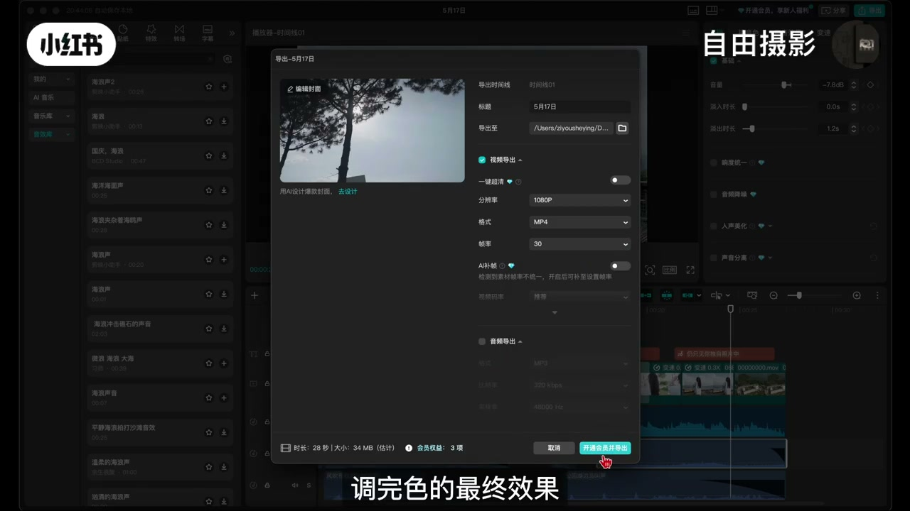
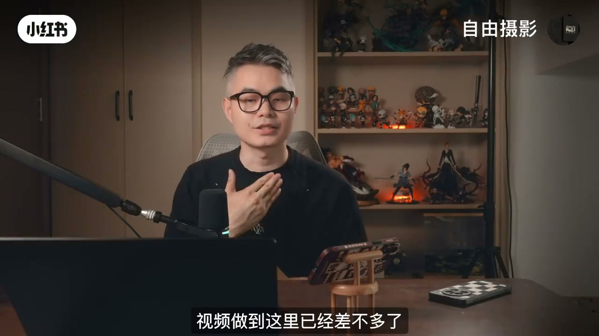
完整转录（558段）
以下文本由 Whisper medium 模型自动转录，可能存在少量识别误差，已尽可能修正。
大家好 欢迎来到简映时超哥
今天我们学简映专业版的完整剪辑流程
从思路 素材 初剪 精简
加音乐 加文字 加音效最终导出
八个步骤从零开始
让不会剪辑的你看完就能上手
好 接下来我们从打开软件开始
首先打开简映专业版
在这个窗口上我们点击开始创作
进入主界面之后
这里可以用鼠标双击界面边缘
把窗口放大一点
可以看得更舒适
进入剪辑界面
我们第一个要做的是素材的导入
你可以点击左侧的加号按钮进行导入
以免刮痕
如果刮痕 刮痕 刮痕
刮痕 刮痕 刮痕
刮痕 刮痕 刮痕
刮痕 刮痕 刮痕
第二个要做的是素材的导入
你可以点击左侧的加号按钮进行导入
也可以直接从文件夹里把素材拖拽到
媒体词的区域
为了节省课堂上不必要的时间
这里我已经提前准备好要用的素材
直接把它拖到媒体词里
素材导进来之后
我们剪辑前一定要有个定位
也就是你想表达什么样的主题内容
是展示产品
还是传递某种群系
一定要在心里有一个明确的思路
这个步骤很多新手会忽略掉
但恰恰对干入门剪辑的同学是最重要的
那今天我们的主题就是
剪一个音乐情感类的短片
有了方向之后
我们就可以开始预览每个素材
直接用鼠标左键点击需要的片段
就可以开始预览
还可以配合快捷键L键加快预览速度
每个片段都可以用这个方法快速的预览
通过预览素材
你要清楚知道素材一共有几个片段
哪几个素材是在同一个场景
哪些素材是空镜头
哪些片段是有人物
每个镜头大概是什么样的内容
这里顺便说一下
我用的这些素材
都是我自己在市民商拍摄的
所以我清楚知道
自己想要表达什么样的内容
就不做特别详细的解说了
但我们还是快速的浏览一遍
让大家感受一下整体素材的感觉
好到这里
我们大概已经浏览了每个片段的内容
大家心里应该也有底了
这些素材里有人物镜头
也有不少空镜头
接下来我们就是给片段做个排序
也就是决定哪些镜头放在前面
哪些放在后面
这里也给大家分享一个小技巧
剪辑的时候
不要一上来就放人物镜头
直接进入主题
那节奏会太快
观众还没有进入状态
可能就直接滑走了
所以我们通常会在开头
先放几个空镜头
营造氛围
调动观众情绪
增加一点点神秘感
让观众慢慢进入你的画面世界
来看一下具体怎么操作
在片头
我一般会选几个空镜头作为开场
比如这棵树的空镜头
用鼠标左键
点击素材就能播放
按空格键暂停
先剪哪一段
按I键入点
按O键出点
然后直接拖到时间线
这样时间线上
就得到一小段素材
同时这里我们提到了快捷键
很多同学怕记不住
我们可以通过监视器右上方
这里能看到全部快捷键设置
你也可以通过窗口右上方设置
按自己的习惯进行更改
这边默认的是Final Cut的快捷键
你也可以换成Premier或者自定义
我这里就不做更改了
第二个片段
我选一个韩拍前推
操作跟第一个片段一样
空格键暂停
I键入点
O键出点
再拖到时间线
第三个片段
我加一个局部空警
还是同样的操作
I键入点
O键出点
确认好片段位置
再拖到时间线就可以
这时候我们可以看到
时间线放不下了
我们可以按住凯曼的加鼠标滚轮键
或者点击时间线上方功能区的
放大
缩小就能调整时间线的显示范围
这样就可以根据自己的剪辑情况
随时调整
好
我们前面有几个素材
都是属于空镜头
接下来我放一个人物的镜头
比如这里我放一个人物局部特写
我们鼠标选中播放
在挑选好片段的位置
然后拖到时间线上
就得到第4个片段
同样我们可以在这个素材上
按I键入点
O键出点
再拖到时间线上
我们又得到第5个片段
这几个素材都是在同一个场景拍摄的
只是拍摄角度以及景别不同
我们可以把它衔接在一起
是非常连贯的
还有这个片段也是一样的
按I键
O键
拖到时间线上
这个片段也是一样
I键入点
O键出点
再拖到时间线上
这样我们就可以把同一个场景
不同角度位置的素材衔接在一起
我们可以去播放感受一下
拼接在一起的效果
然后通过播放可以多观察画面
也可以及时调整素材的步骤
还有这几个镜头
都是在同一个场景
我们通常把这种叫做一组镜头
后面几个镜头
就不是在同一个场景了
所以这里我们需要加一个空镜头进行过渡
比如我加了小草特写的空镜头
同样用I键入点
O键出点
挑选好片段位置
加在时间线后面
那界面显示不够
我们把时间线再缩小一点
接下来我们来挑选后面几个镜头
用I键入点
O键出点
挑选好拖拽到后面来
然后继续加下一个镜头
同样的方法
I键
O键拖到时间线上
再来添加下一个镜头
按I键入点
O键出点
同样拖到时间线上
最后这里我保留了一个大场景的素材
放在短片的片尾
同样用快捷键打上出入点
拖到时间线最后面
OK
后面这几个片段也接上了
顺序也排列形成了
相当于初进完成
这里我们再播放一下后面几个片段
好
通过播放
我发现画面是有杂音的
这些杂音其实就是素材的原生
这里我们先选中所有的片段
鼠标右键选择分离音频
把分离出来的原生删掉
这样就可以去掉杂音了
接下来我们要加一段背景音乐
有同学可能会问
音乐是剪辑前加还是剪好再加
其实没有绝对的标准
主要看你的剪辑习惯和视频需求
比较通用的做法是
先剪辑好画面
去掉原生
再加背景音乐
不过如果你的片子是需要彩点
或者整体情绪是主要靠音乐来带的
那就可以先把音乐放进来
再跟进音乐的节拍去剪画面
这里音乐我也提前准备好了
就在文件夹里
我们直接选择好
拖到媒体词就可以了
当然你也可以通过
左上角的音频去添加
添加音乐有多种方法
不知道的同学
可以回顾一下第一节课
这里我们直接把音乐拖到时间线
操作的时候
如果觉得剪辑界面太小
可以把鼠标放到面板之间的缝隙上
按住左键往左拖
这样剪辑区域就能变框
如果想要更精细的调整布局
也可以点击监视器右上角的
界面布局按钮
改成自己喜欢的布局
这里加了音乐再播放一下
OK
接下来我们进入下一阶段
经纪
这一步要把素材和音乐配合调整
让整体更有节奏感和氛围感
同时对每个片段做精细调整
我们先选中素材
从第一个片段开始调整
这里我们可以把素材往上拖到自由轨道
然后往后挪一点
就能看到它和第一段素材之间
流出了空隙
这样我们就可以一个片段
一个片段的调整
不用担心影响后面的片段了
然后把播放头移动到第一个素材上
按住command加鼠标滚轮
把时间线放大一些
可以更好的调整
先播放看一下
好
中间有一小段是我想要的
用command加B把它分割出来
选中后面不需要的片段
按delay键删除
片段前面部分也不是我想要的
同样把播放头移到需要分割的位置
按command加B分割
再选中前面部分delay键删除
这样我们就得到中间这一小段素材
之所以这样处理
是为了让这个片段跟下方音乐
第一个凸起的节奏点对齐
接下来我们来处理第二个片段
也希望它能跟这个节奏点对齐
但我只需要中间一小部分
先把播放头移到想要切割的位置
按command加B分割
选中后面部分删除
前面也分割一小段删掉
如果调整完后面还是有点长
可以把鼠标放到片段尾部
这时鼠标会变成双括号
按住左键往前推也能缩短片段
这样就对齐了这个节奏点
好
第二个片段我们差不多也匹配好了
再加第三个
第三个片段就不需要刻意去
跟音乐节奏点了
可以稍微放长一点
大概在这个位置差不多
然后播放一下
感觉还是有点多
那就再压短一点
然后是第四个片段
这个片段是正常速度
感觉缺少点氛围
所以我们用command加R
打开变速控制
调整到0.25倍
这里要说明一下
调整速度时
一定要了解自己的片段
是多少帧力拍摄的
如果素材是30帧或60帧拍摄的
调整0.25倍
肯定会掉帧卡顿
不过我这个素材
外拍用的是120帧
所以没有问题
这个片段我需要大概在这个位置
分割删除后面
然后把后面删掉
然后把后面的素材也拖上来
同样按command加R
打开变速控制
调到0.25倍
这个片段后面部分不想要
分割删除
接着我们再调整下一个片段
这里先把时间线缩小一点
素材拖过来
同样用command加R
打开变速控制
调整到0.25倍
片段后面部分删掉
继续下一个素材
打开变速控制
调整到0.25倍
然后我们这里只需要一小段片段
把素材前后部分分割一下
删掉
OK我们就得到这样一个小片段
这里我们把调整过的片段播放一下
这件调整之后整体视频
无论是节奏点还是氛围感
都好了很多
接下来我们把空镜头拖过来
把速度调到0.5倍
空镜头不需要太慢
0.5倍就足够了
调整之后素材会变长
我们把调整到0.5倍
调整到0.5倍
调整到0.5倍
调整到0.5倍
调整到0.5倍
调整之后素材会变长
我们把它缩短到这个位置差不多了
下一个素材拖过来
按command加R
打开变速控制
调到0.25倍
感觉有点长
也压短一点
后面几个片段操作也是类似的
有人物的片段我都调到0.25倍
素材尾部直接压短不要了
在下一个素材也一样拖过来
速度调到0.25倍
放慢之后片段太长了
再压短一点
好 最后一个片段也拖过来
先播放看一下
片段的尾部相比音乐素材有点超出了
直接把后面去掉一点
OK 我们这里把调整完的部分播放一下
就这样我们的一个短片就排列完成了
整个片段没有什么调整难点
主要是加了百搭的声隔
也就是降低了片段的速度
氛围感一下子就出来了
接下来我们给这段视频加一些歌词
歌词怎么添加呢
我们可以通过左上方找到文本
然后点击字的文本
然后再按下右上方的文本
然后再按下右上方的文本
然后再按下右上方的文本
然后再按下右上方的文本
然后点击字的文本
选择识别歌词
识别出来之后
这里有非常多的歌词排列样式
供我们选择
我们随意选一个自己喜欢的
点击选择
然后在下方点击开始识别歌词就可以了
非常简单
简易的歌词排列风格有很多
对于新手特别友好
识别完成之后
我们就可以看到时间线上和监视机中
都有对应的歌词了
试唱一下感受一下效果
加了歌词之后
整个视频就非常有感觉
又升华了一层
另外如果你添加完歌词之后
发现歌词覆盖不全
你可以手动拉动歌词的前后端
你可以手动拉动歌词的前后端
调整到你想要的位置
OK 接下来我们给短篇添加一些简单的转产
OK 接下来我们给短篇添加一些简单的转产
转产怎么添加呢
转产纪念加在两个不同的场景之间
比如说前面几个片段
比如说前面几个片段
还有这几个都是在同一个场景拍摄的
还有这几个都是在同一个场景拍摄的
只是拍摄角度以及景别不一样
只是拍摄角度以及景别不一样
像这样属于同一组镜头
就不要刻意去加转产了
一定要加在不同场景之间
比如说这个场景和下一个场景是不一样的
比如说这个场景和下一个场景是不一样的
后面几个场景也各不相同
就可以考虑在这些位置添加转产
就可以考虑在这些位置添加转产
来给大家示范一下
点击左上角的转产菜单
然后拖到时间线上对应的位置
然后拖到时间线上对应的位置
拉动效果的前后端还可以调整转产的时长
拉动效果的前后端还可以调整转产的时长
调整完播放一下感受一下效果
后面好几个片段的场景也是不相同的
后面好几个片段的场景也是不相同的
我们可以考虑再加一个转产
比如在这个位置
这次我们选一个物化交叉把
同样的拖到时间线上对应的位置
加好之后播放一下
好了文字转产都有了
最后我们再加一些音效
音效怎么加呢
根据画面来就行
比如我们看第一个画面
有阳光有树
是在户外对吧
在这个画面我们会联想到什么声音
炎热的夏天
资料的声音
风声鸟叫声
这些都符合画面的氛围
具体怎么操作呢
同样在左上方的工具栏
这次我们选择音频
再找到音效库
直接搜索资料声
搜索出来之后可以一个个试听一下
好这个不错
是我想要的
直接把它拖到这里来
同时可以看到音效
有点长
我们直接把它往回压
缩短到这里差不多
还有我想让音效结束的
更自然一点
我们把时间线放大
然后把鼠标放在音效片尾的
的原点上
鼠标会变成双头箭头
然后再往左拖一下
效果就做好了
调整好之后试听一下
音效声音有点大
因为我们这个音效只是点缀
增加氛围感用的
不用太突出
所以这里我们把音量调小一点
隐隐约约有点感觉就行
好继续往下看
还有画面里有衣服在飘动
我们再加一个风的音效
收索微风
我们可以加在这个位置
同样把这个音效的音量调小一点
有点效果就可以
刚才说了衣服在飘动
衣服属于布料
我们可以再收一个布料的音效
把布料飘动的音效拖进来
再把这个音效声调小一点
同时也加上弹珠效果
上面这个音效也加上弹珠
还有在画面这里
人物踩到了草地
你也可以在这个位置加上
鞋子踩到草地的音效
我讲这么多加音效的例子
就是要大家根据画面打开思维
再往下看
这里有一个转场
我们可以加一个转场音效
收索转场音
试听一下
然后拖到转场下方
这个位置就好了
同样音效声音稍微拉小一点
再来看后面几个素材
这个画面看起来是在湖边
我们可以搜索湖边
湖边通常有很多树
自然就会有鸟叫声
我们把鸟叫声拖到这个位置
感觉有点靠前
而且片尾多出来了一截
再跟上方素材对齐一下
声音也调整一下
还有刚才已经说过画面是有湖的
湖是跟水有关系的
我们再加一个跟水有关的声音
比如海浪声
海浪声
好,就这个吧
声音也调小一点
再整体播放一下
没有问题的话
把片尾再稍微调整一下
那你看到画面还能想到什么声音
都可以加在下面这个音频轨道上
这个完全可以根据自己的风格和需求来
我举这么多例子
就是想让大家打开思维
根据画面做出自己的风格
千万不要实际硬背
那么音效加完了
还可以给视频调个色
全部处理好之后就可以导出了
点击右上角的导出
选择好导出的位置
视频分辨率我们选择
1080P或者4K
一般选择1080P就够用了
当然你想要更清晰一点
也可以选择4K
前提是你的素材是4K拍摄的
如果你是用1080P拍摄的
那就选1080P
我这里拍摄的时候呢
是1080P
所以我选1080P
格式选择MP4
帧率选择30帧
音频设置里的勾选可以去掉
然后点击导出就可以了
最后我们来看一下
调完色的最终效果
好
视频做到这里呢
已经差不多了
剪辑这个东西观看可能还不够
一定要自己手动练习一遍
才能真正记住
练习素材呢我已经放到素材库了
喜欢这期课程的话
记得点赞收藏
要不然找不到了
下一期我们把剪辑功能期再熟悉一下
可以更好的提升剪辑效率
这里是自由摄影
同学们咱们下一期再见
拜拜